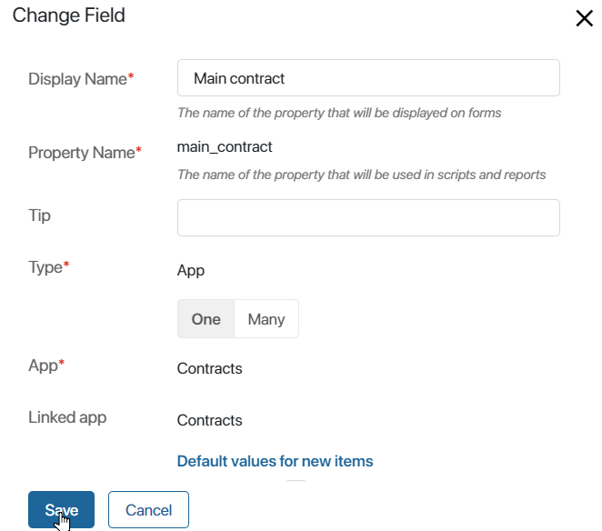
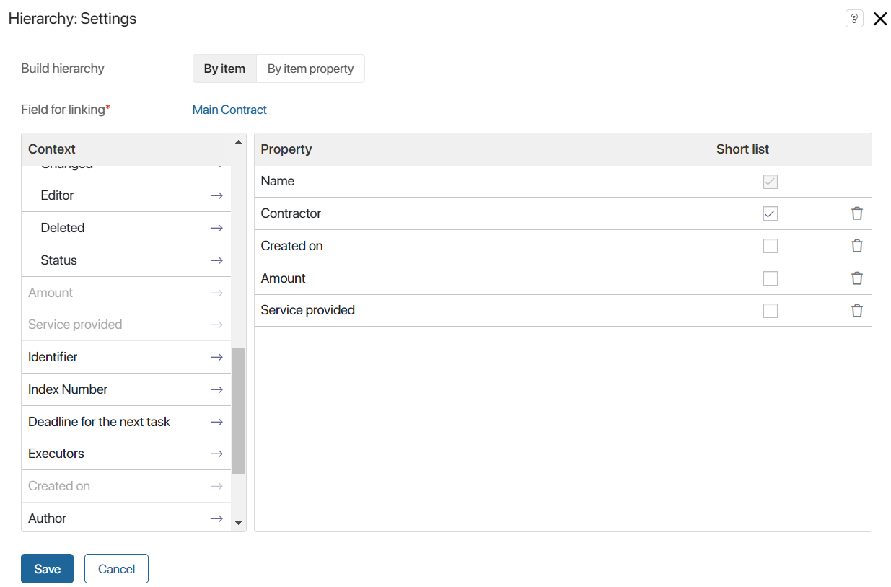
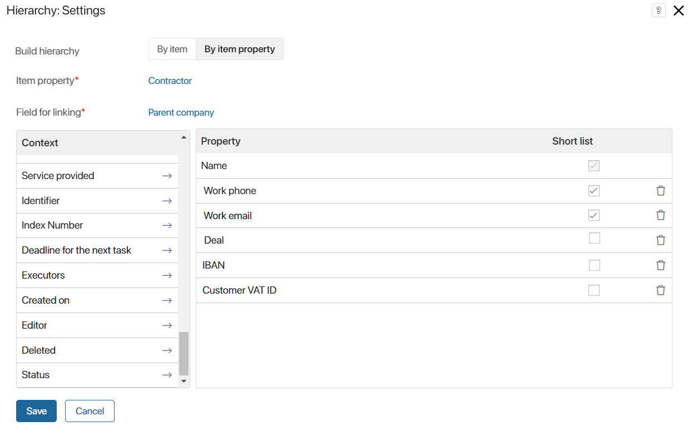
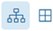
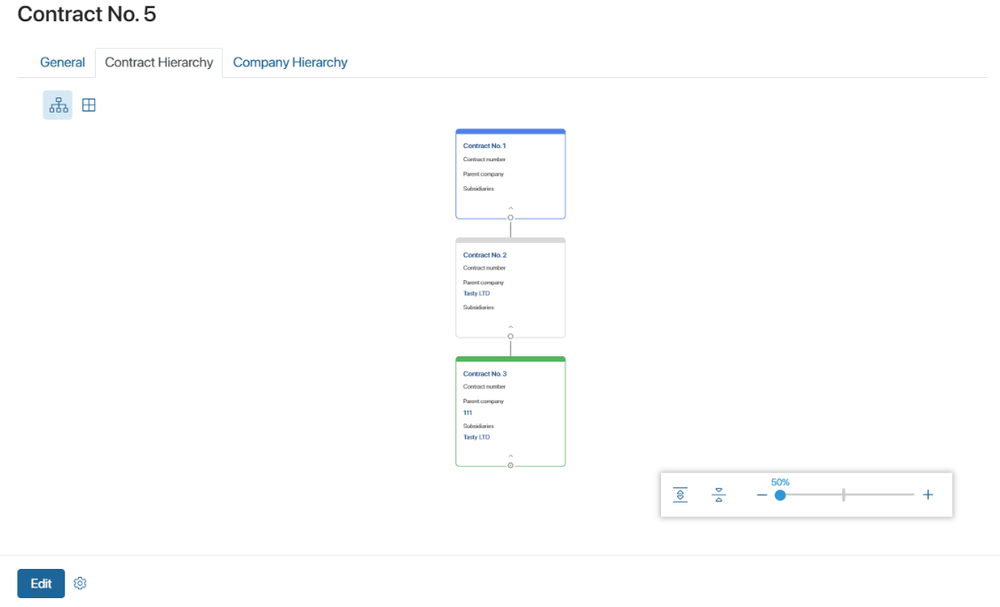
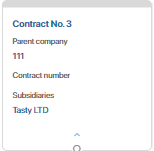
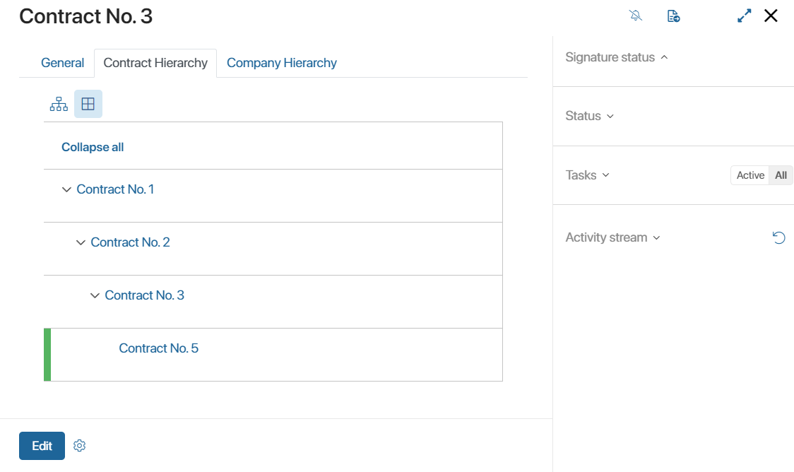

The widget displays linked items of one app in the form of a hierarchical chart. The connection is established in the following way: on the page of one item the related items from the same app are selected.
For example, for the Company app, you can create a chart of the company's hierarchy by specifying the parent company and its subsidiaries in the page.
The hierarchy can be displayed as a tree or a table on the item page. In this case, in the widget settings you can select the fields that will be shown for hierarchy items in the table and tree.
It is recommended to display the hierarchy in a separate tab of the form. You can place the widget both on the form of the app for which the hierarchy is customized and on the page of another app. Depending on this, the widget settings differ.
Customize the hierarchy in the app
To display the structure, the app context is first customized. To do this, a field of the App type is added to it for binding. It will refer to itself. In this field on the form of the item the user will be able to specify another item from the same app.
Then the Hierarchy widget is added to the app form and customized.
Let’s consider two ways of customizing the hierarchy using examples. In the Contracts app, different tabs will display:
- The structure of all contracts and additional agreements. The items are stored in the app for which the hierarchy is being customized.
- The hierarchy of contractors from these contracts. The items are stored in another app, Company.
Customize the context for the hierarchy from scratch
To display the structure of contracts, a field must be added to the Contracts app to link its items to each other:
- Click the gear icon next to the Companies app name and select Form Settings.
- Create a property of App type, enable the One option, and select the app whose form you are customizing. Save the property.

- Enable advanced mode for form settings, add the created property to all forms in the app, and save the settings.
Customize the context for the hierarchy in the Company app
In our example, the contractor in the contract is pulled from the Company app. It is part of BRIX CRM. The following fields are created in it by default for linking items and customizing the hierarchy:
- Parent Company. A field with the One option enabled, to specify the main office of the organization.
- Subsidiaries. A field with the Many option enabled to select all branches of the company.
To allow users to link companies to each other, display these properties on the app forms:
- Click the gear icon next to the Contracts app name and select Form Settings.
- Since Advanced Mode of the form settings is enabled for the app, add the Parent Company and Subsidiaries properties to the Create, View, and Edit tabs.
- Disable the Read only option for the properties so that on the forms users can not only create new companies, but also select them from existing records.
- Save the settings.
Customize the Hierarchy widget
The next step is to customize the app form where you want to display the structure.
начало внимание
It is recommended to place the Hierarchy widget in a separate tab of the form.
конец внимание
In our example, the hierarchies of contracts and contractors are being customized, so two tabs are created on the Contracts app form. A widget is added to each of them and customized differently:
- Go to the interface designer of the app view form.
- Add the Tabs widget to the modeling field and set a name for it.
For our example, the following tabs are created in the contract page: Contract Hierarchy and Company Hierarchy. - Go to the created tab, click + Widget and select the Hierarchy widget.
Further settings of the widget will differ depending on which app structure you want to display on the customized form. Two hierarchy options are available: By item and By item property.
Hierarchy by item
Hierarchy by item is selected if you want to display the structure of the app whose form is currently being customized.
In our example, in the Contracts app, the structure of the contract and its additional agreements will be displayed on the Contract Hierarchy tab. You need to specify the parameters in the settings of the widget placed on this tab:

- Build hierarchy. The By item option is selected.
- Field for linking*. Select the App type property, where users specify the linked item from the same app. For contracts this is the Main Contract field created earlier at the step of context customization.
After that, configure the hierarchy display settings in the widget.
Hierarchy by item property
Hierarchy by item property is selected if you want to display the structure of another app related to it on the form of one app.
In our example, in the contract page, in the Contractor field contains an item from the Company app. Since the contract and the company are linked, you can display the structure of the company selected in the field on the Contracts app form.
In the settings of the widget located on the Company Hierarchy tab, the parameters are specified:

- Build hierarchy. Select the By item property option.
- Item property*. From the context of the current app select the field of the App type that refers to the linked item. In the Contracts app, this is the Contractor field that references the company. The hierarchy of the linked company-contractor will be displayed on the contract form.
- Field for linking*. From the context of the app linked to the current one and selected in the previous field, a property of App type with the One option enabled is selected. For our example from the Companies app the default created Parent company field is specified.
Customize the display of items in the hierarchy
The next step for both ways of hierarchy building is to set the appearance of items from the structure on the form:
- Specify which app properties will be displayed in tree and table views. To do that, drag the fields from the Context column.
- Select the properties to he shown in collapsed tree pages. To do that, enable the Short list option for the added fields.
To delete a property added from the context, click on the trash bin icon next to it.
To finalize the widget settings, save the specified parameters.
To make the form available to users, click Save and Publish on the top panel of the interface designer.
Display hierarchy on the form
A widget can display up to 100 linked items. On the form, the hierarchy can be viewed as a tree and a table. The icons  are used to switch the way data is displayed in the widget.
Hierarchy items are highlighted in different colors. Blue color is used for the head item. The record whose card is open or linked to the current item is highlighted in green. The other components of the structure are indicated in gray.
You can interact with the fields in the pages of the hierarchy items. For example, click on a field of the Email type to go to writing a letter or click on a link in a field of the App type to open the page of the specified record.
When building a company hierarchy, the contact's name, title, phone number, and work email are automatically displayed in the selected field. If several contacts are specified, all related records are displayed.
Tree
When displayed as a tree, the widget shows blocks of related items with a short list of fields.

To view the page and the full list of fields specified in the widget settings, click on the arrow icon in the block.

In items with dependent records, the icon is displayed. Click it to expand or collapse the corresponding tree branch.
The tree control panel is located in the lower right corner of the widget. You can use it to scale the tree, minimize and maximize its structure.
You can move around the tree on the form by dragging and dropping cards of items using the drag-and-drop method. In this way you can view records if the tree displays a large hierarchy.
Table
The hierarchy table consists of a complete list of fields selected in the widget settings. You can collapse and expand the displayed structure. To do this, click the button in the first column of the table.
